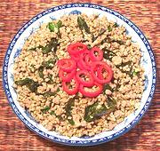

|
Spicy Ground PorkThailand - Phat Khi Mao Mu | ||||
| Serves: Effort: Sched: DoAhead: |
3 main ** 30 min Prep |
A popular meaty dish with a bit of chili bite. It is also made with Chicken (Phat Khi Mao Kai). I serve with Chili Vinegar Sauce on the side so it can be spiced up a bit more. | |||
|
1 5 1 5 1/2 ----- 2 1 1 1/4 ----- 2 |
# cl oz c --- T T t c --- T |
Pork, lean Garlic Cilantro Roots (1) Thai Chili (2) Thai Basil Leaf (3) --Sauce Fish Sauce (4) Oyster Sauce (5) Palm Sugar Stock --------- Oil |
Prep - (15 min)
|